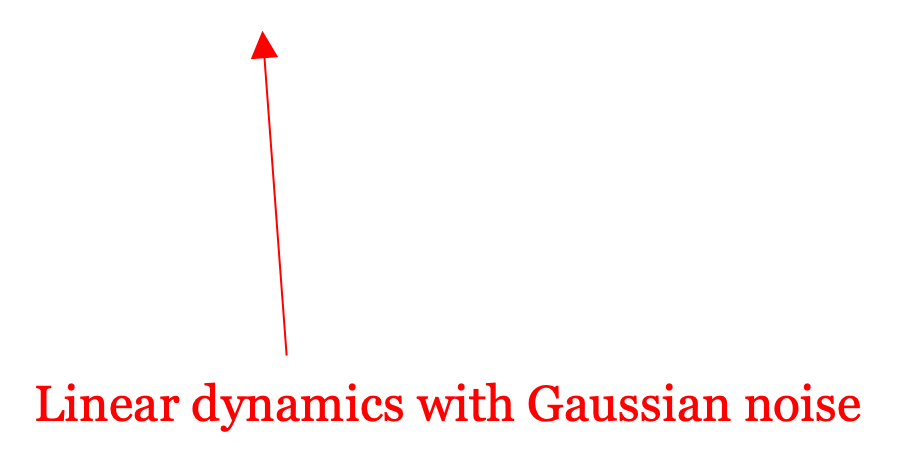
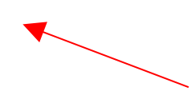
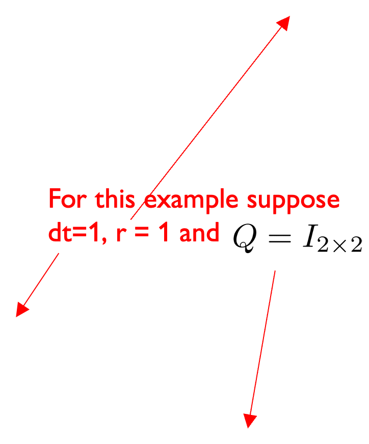
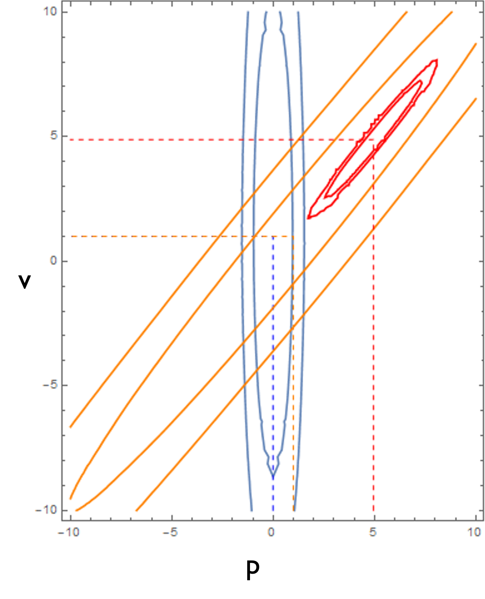

CSC477 Introduction to Mobile Robotics
Week #8: Bayes’ Filters and Kalman Filter
Recommended reading
Chapters 2 and 3.2 from Probabilistic Robotics
Chapters 4.9 and 8.3 from Computational Principles of Mobile Robotics
Lesson 2 in https://www.udacity.com/course/artificial-intelligence-for-robotics--cs373
This illustrative blog post: http://www.bzarg.com/p/how-a-kalman-filter-works-in-pictures/
Careful: the figure between equations (9) and (10) is wrong. The blue Gaussian should be taller and peakier than the other two Gaussians, the prior and the measurement models. This is not fixed as of March 15, 2017.
Filtering vs. Smoothing
- Smoothing/Batch Estimation
\[p(\mathbf{x}_{0:T} \mid \mathbf{z}_{0:T}, \mathbf{u}_{0:T-1})\]

- Filtering Estimation
\[p(\mathbf{x}_t \mid \mathbf{z}_{0:t}, \mathbf{u}_{0:t-1})\]
What’s the difference?
- Smoothing/Batch Estimation
\[p(\mathbf{x}_{0:T} \mid \mathbf{z}_{0:T}, \mathbf{u}_{0:T-1})\]
All measurements and
controls are known
in advance
- Filtering Estimation
\[p(\mathbf{x}_t \mid \mathbf{z}_{0:t}, \mathbf{u}_{0:t-1})\]
Measurements and controls
are processed online as they come.
Future measurements are unknown.
Why do we use filtering?
- Online belief updates: filters provide a principled way to incorporate noisy information from sensor measurements, which can change our prior belief, in an online fashion.
- Sensor fusion: filters enable us to combine measurements from multiple different noisy sensors into one coherent state estimate. E.g. camera + laser, camera + IMU, multiple cameras, sonar and IMU, GPS and IMU etc.
Technically speaking, this is also
true for smoothing estimators.
Bayes’ Filter
- A generic class of filters that make use of Bayes’ rule and assume the following:
Markov Assumption For Dynamics : the state \(x_t\) is conditionally independent of past states and controls, given the previous state \(x_{t-1}\) In other words, the dynamics model is assumed to satisfy \[p(x_{t}|x_{0:t-1}, u_{0:t-1}) = p(x_{t}|x_{t-1}, u_{t-1})\]
Static World Assumption: the current observation is conditionally independent of past observations and controls, given the current state
\[p(z_t|x_t, u_{0:t-1}, z_{0:t-1}) = p(z_t|x_t)\]
Note: the Markov assumption is
more general than what we have
presented here.
Bayes’ Filter: Derivation
\[\begin{align*} bel(x_t) &= p(x_t|u_{0:t-1}, z_{0:t}) \\ &= \eta p(z_t|x_t, u_{0:t-1}, z_{0:t-1}) p(x_t|u_{0:t-1}, z_{0:t-1}) \end{align*}\]
Normalizing factor that makes the integral/sum of the numerator in Bayes’ Rule be 1.
Conditional Bayes’ Rule
\(p(A|B,C) = \frac{p(C|A,B)p(A|B)}{p(C|B)}\)
Bayes’ Filter: Derivation
\[\begin{align*} bel(x_t) &= p(x_t|u_{0:t-1}, z_{0:t}) \\ &= \eta p(z_t|x_t, u_{0:t-1}, z_{0:t-1}) p(x_t|u_{0:t-1}, z_{0:t-1}) \\ &= \eta p(z_t|x_t) p(x_t|u_{0:t-1}, z_{0:t-1}) \end{align*}\]
Static World Assumption
Bayes’ Filter: Derivation
\[\begin{align*} bel(x_t) &= p(x_t|u_{0:t-1}, z_{0:t}) \\ &= \eta p(z_t|x_t, u_{0:t-1}, z_{0:t-1}) p(x_t|u_{0:t-1}, z_{0:t-1}) \\ &= \eta p(z_t|x_t) p(x_t|u_{0:t-1}, z_{0:t-1}) \\ &= \eta p(z_t|x_t) \int p(x_t, x_{t-1}|u_{0:t-1}, z_{0:t-1}) dx_{t-1} \end{align*}\]
Marginalization, or law of total probability
\(\color{black}p(A) = \sum_{B_{i}}p(A,B_{i})\)
where the sum enumerates all possibilities over the variable Bi. If we see Bi as a set, then the collection of Bi’s must be pairwise disjoint. I.e. the collection of subsets Bi must be a partition of the sample space.
Bayes’ Filter: Derivation
\[\begin{align*} bel(x_t) &= p(x_t|u_{0:t-1}, z_{0:t}) \\ &= \eta p(z_t|x_t, u_{0:t-1}, z_{0:t-1}) p(x_t|u_{0:t-1}, z_{0:t-1}) \\ &= \eta p(z_t|x_t) p(x_t|u_{0:t-1}, z_{0:t-1}) \\ &= \eta p(z_t|x_t) \int p(x_t, x_{t-1}|u_{0:t-1}, z_{0:t-1}) dx_{t-1} \end{align*}\]
Marginalization, or law of total probability
\(\color{black}p(A) = \sum_{B_{i}}p(A,B_{i})\)
Here we are actually using the law of total probability for conditional distributions, so
\(\color{black}p(A|C) = \sum_{B_{i}}p(A,B_{i}|C)\)
Bayes’ Filter: Derivation
\[\begin{align} bel(x_t) &= p(x_t|u_{0:t-1}, z_{0:t}) \\ &= \eta p(z_t, x_t|u_{0:t-1}, z_{0:t-1}) p(x_t|u_{0:t-1}, z_{0:t-1}) \\ &= \eta p(z_t|x_t) p(x_t|u_{0:t-1}, z_{0:t-1}) \\ &= \eta p(z_t|x_t) \int p(x_t, x_{t-1}|u_{0:t-1}, z_{0:t-1}) dx_{t-1} \\ &= \eta p(z_t|x_t) \int p(x_t|u_{0:t-1}, z_{0:t-1}, x_{t-1}) p(x_{t-1}|z_{0:t-1}, u_{0:t-1}) dx_{t-1} \end{align}\]
Definition of conditional distribution
\(\color{black}p(A, B|C) = p(A|B, C)p(B|C)\)
Bayes’ Filter: Derivation
\[\begin{align*} bel(x_t) &= p(x_t|u_{0:t-1}, z_{0:t}) \\ &= \eta p(z_t|x_t, u_{0:t-1}, z_{0:t-1}) p(x_t|u_{0:t-1}, z_{0:t-1}) \\ &= \eta p(z_t|x_t) p(x_t|u_{0:t-1}, z_{0:t-1}) \\ &= \eta p(z_t|x_t) \int p(x_t, x_{t-1}|u_{0:t-1}, z_{0:t-1}) dx_{t-1} \\ &= \eta p(z_t|x_t) \int p(x_t|u_{0:t-1}, z_{0:t-1}, x_{t-1}) p(x_{t-1}|z_{0:t-1}, u_{0:t-1}) dx_{t-1} \\ &= \eta p(z_t|x_t) \int p(x_t|u_{t-1}, x_{t-1}) p(x_{t-1}|z_{0:t-1}, u_{0:t-1}) dx_{t-1} \end{align*}\]
Markov assumption for dynamics
Bayes’ Filter: Derivation
\[\begin{align*} bel(x_t) &= p(x_t|u_{0:t-1}, z_{0:t}) \\ &= \eta p(z_t|x_t, u_{0:t-1}, z_{0:t-1}) p(x_t|u_{0:t-1}, z_{0:t-1}) \\ &= \eta p(z_t|x_t) p(x_t|u_{0:t-1}, z_{0:t-1}) \\ &= \eta p(z_t|x_t) \int p(x_t, x_{t-1}|u_{0:t-1}, z_{0:t-1}) dx_{t-1} \\ &= \eta p(z_t|x_t) \int p(x_t|u_{0:t-1}, z_{0:t-1}, x_{t-1}) p(x_{t-1}|z_{0:t-1}, u_{0:t-1}) dx_{t-1} \\ &= \eta p(z_t|x_t) \int p(x_t|u_{t-1}, x_{t-1}) p(x_{t-1}|z_{0:t-1}, u_{0:t-1}) dx_{t-1} \\ &= \eta p(z_t|x_t) \int p(x_t|u_{t-1}, x_{t-1}) p(x_{t-1}|z_{0:t-1}, u_{0:t-2}) dx_{t-1} \end{align*}\]
Control at time t-1 only affects state at time t
Bayes’ Filter: Derivation
\[\begin{align*} bel(x_t) &= p(x_t|u_{0:t-1}, z_{0:t}) \\ &= \eta p(z_t|x_t) \int p(x_t|u_{t-1}, x_{t-1}) bel(x_{t-1}) dx_{t-1} \end{align*}\]
Bayes’ Filter: Derivation
\[\begin{align} bel(x_t) &= p(x_t|u_{0:t-1}, z_{0:t}) \\ &= \eta \, p(z_t|x_t) \underbrace{\int p(x_t|u_{t-1}, x_{t-1}) \, bel(x_{t-1}) \, dx_{t-1}}_{\begin{subarray}{c} \text{Computes the probability density of reaching state} \\ \text{$x_t$ from any possible previous state $x_{t-1}$} \\ \text{via the command $u_{t-1}$} \end{subarray}} \end{align}\]
Bayes’ Filter: Derivation
\[\begin{align} bel(x_t) &= p(x_t|u_{0:t-1}, z_{0:t}) \\ &= \underbrace{\eta \, p(z_t|x_t) \int p(x_t|u_{t-1}, x_{t-1}) \, bel(x_{t-1}) \, dx_{t-1}}_{\begin{subarray}{c} \text{Computes the probability density of reaching state} \\ \text{$x_t$ from any possible previous state $x_{t-1}$} \\ \text{via the command $u_{t-1}$ and observing $z_t$} \end{subarray}} \end{align}\]
Bayes’ Filter: Derivation
\[\begin{align} bel(x_t) &= p(x_t|u_{0:t-1}, z_{0:t}) \\ &= \underbrace{\eta \, p(z_t|x_t) \underbrace{\int p(x_t|u_{t-1}, x_{t-1}) \, bel(x_{t-1}) \, dx_{t-1}}_{\text{Belief after prediction step}}}_{\text{Belief after update step}} \end{align}\]
Kalman Filter: an instance of Bayes’ Filter
\[\begin{align} bel(x_t) &= p(x_t|u_{0:t-1}, z_{0:t}) \\ &= \eta \, p(z_t|x_t) \int p(x_t|u_{t-1}, x_{t-1}) \, bel(x_{t-1}) \, dx_{t-1} \end{align}\]
\(z_t = Hx_t + n_t\)
\(\qquad\) with noise \(n_t \sim \mathcal{N}(0, R)\)

\(x_{t} = Ax_{t-1}+Bu_{t-1}+Gw_{t-1}\)
\(\qquad\) with noise \(w_{t-1} \sim \mathcal{N}(0, Q)\)
\(bel(x_0) \sim \mathcal{N}(\mu_0, \Sigma_0)\)
Kalman Filter: assumptions
Two assumptions inherited from Bayes’ Filter
Linear dynamics and observation models
Initial belief is Gaussian
Noise variables and initial state \[x_0, w_0, w_1, \ldots, \eta_0, \eta_1, \ldots\] are jointly Gaussian and independent
Noise variables \(w_t\) are independent and identically distributed \(\mathcal{N}(0, Q)\)
Noise variables \(n_t\) are independent and identically distributed \(\mathcal{N}(0, R)\)
Kalman Filter: why so many assumptions?
Two assumptions inherited from Bayes’ Filter
Linear dynamics and observation models
Initial belief is Gaussian
Noise variables and initial state \[x_0, w_0, w_1, \ldots, \eta_0, \eta_1, \ldots\] are jointly Gaussian and independent
Noise variables \(w_t\) are independent and identically distributed \(\mathcal{N}(0, Q)\)
Noise variables \(n_t\) are independent and identically distributed \(\mathcal{N}(0, R)\)
Without linearity there is no closed
form solution for the posterior
belief in the Bayes’ Filter. Recall that
if X is Gaussian then Y=AX+b is also
Gaussian. This is not true in general
if Y=h(X).
Also, we will see later that applying
Bayes’ rule to a Gaussian prior and a
Gaussian measurement likelihood
results in a Gaussian posterior.
Kalman Filter: why so many assumptions?
Two assumptions inherited from Bayes’ Filter
Linear dynamics and observation models
Initial belief is Gaussian
Noise variables and initial state \[x_0, w_0, w_1, \ldots, \eta_0, \eta_1, \ldots\] are jointly Gaussian and independent
Noise variables \(w_t\) are independent and identically distributed \(\mathcal{N}(0, Q)\)
Noise variables \(n_t\) are independent and identically distributed \(\mathcal{N}(0, R)\)
This results in the belief remaining Gaussian
after each propagation and update step.
This means that we only have to worry
about how the mean and the covariance
of the belief evolve recursively with
each prediction step and update step
-> COOL!
Kalman Filter: why so many assumptions?
Two assumptions inherited from Bayes’ Filter
Linear dynamics and observation models
Initial belief is Gaussian
Noise variables and initial state \[x_0, w_0, w_1, \ldots, \eta_0, \eta_1, \ldots\] are jointly Gaussian and independent
Noise variables \(w_t\) are independent and identically distributed \(\mathcal{N}(0, Q)\)
Noise variables \(n_t\) are independent and identically distributed \(\mathcal{N}(0, R)\)
This makes the recursive updates of the mean and covariance much simpler.
Kalman Filter: an instance of Bayes’ Filter
\[\begin{align*} \text{bel}(x_t) &= p(x_t|u_{0:t-1}, z_{0:t}) \\ &= \eta p(z_t|x_t) \int p(x_t|u_{t-1}, x_{t-1}) \text{bel}(x_{t-1}) dx_{t-1} \end{align*}\]
Kalman Filter: an instance of Bayes’ Filter
\[\begin{align*} bel(x_t) &= p(x_t|u_{0:t-1}, z_{0:t}) \\ &= \eta p(z_t|x_t) p(x_t|u_{0:t-1}, z_{0:t-1}) \\ &= \eta p(z_t|x_t) \int p(x_t|u_{t-1}, x_{t-1}) bel(x_{t-1}) dx_{t-1} \\ &= \eta p(z_t|x_t) \overline{bel}(x_t) \end{align*}\]
 Belief after prediction step (to simplify notation)
So, under the Kalman Filter assumptions we get
\(bel(x_{t-1}) \sim \mathcal{N}(\mu_{t-1|t-1}, \Sigma_{t-1|t-1})\)
\(\overline{bel}(x_t) \sim \mathcal{N}(\mu_{t|t-1}, \Sigma_{t|t-1})\)
\(bel(x_t) \sim \mathcal{N}(\mu_{t|t}, \Sigma_{t|t})\)
Notation: estimate at time t given history of observations and
controls up to time t-1
Kalman Filter: an instance of Bayes’ Filter
\[\begin{align*} bel(x_t) &= \eta p(z_t|x_t) p(x_t|u_{0:t-1}, z_{0:t-1}) \\ &= \eta p(z_t|x_t) \int p(x_t|u_{t-1}, x_{t-1}) bel(x_{t-1}) dx_{t-1} \\ &= \eta p(z_t|x_t) \overline{bel}(x_t) \end{align*}\]
So, under the Kalman Filter assumptions we get
\(bel(x_{t-1}) \sim \mathcal{N}(\mu_{t-1|t-1}, \Sigma_{t-1|t-1})\)
\(\qquad\qquad \color{red}\downarrow\)
\(\overline{bel}(x_t) \sim \mathcal{N}(\mu_{t|t-1}, \Sigma_{t|t-1})\)
\(\qquad\qquad \color{red}\downarrow\)
\(bel(x_{t}) \sim \mathcal{N}(\mu_{t|t}, \Sigma_{t|t})\)
Two main questions:
- How to get prediction mean and covariance from prior mean and covariance?
- How to get posterior mean and covariance from prediction mean and covariance?
These questions were answered in the 1960s. The resulting algorithm was used in the Apollo missions to the moon, and in almost every system in which there is a noisy sensor involved COOL!
Kalman Filter with 1D state
- Let’s start with the update step recursion. Here’s an example:
Suppose your measurement model is \(z_t = x_t + n_t\) with \(n_t \sim \mathcal{N}(0, 1^2)\)
Suppose your belief after the prediction step is \(\overline{bel}(x_{t})=\mathcal{N}(0,2^{2})\)
Suppose your first noisy measurement is \(z_0 = 5\)
Q: What is the mean and covariance of \(bel(x_t)\) ?
Kalman Filter with 1D state: the update step
From Bayes’ Filter we get \(bel(x_t) = \eta p(z_t|x_t) \overline{bel}(x_t)\) so
\[\begin{align*} p(z_t|x_t) \overline{bel}(x_t) &= \mathcal{N}(\mu_A, \sigma_A^2)\mathcal{N}(\mu_B, \sigma_B^2) \\ &= \dots \\ &= \text{see Appendix 1 for proof} \\ &= \dots \\ &= \mathcal{N}(\mu, \sigma^2)/\eta \end{align*}\]
\(\mu=\mu_{B}+\frac{\sigma_{B}^{2}}{\sigma_{A}^{2}+\sigma_{B}^{2}}(\mu_{A}-\mu_{B})\)
\(\sigma^{2}=\sigma_{B}^{2}-\frac{\sigma_{B}^{2}}{\sigma_{A}^{2}+\sigma_{B}^{2}}\sigma_{B}^{2}\)
Prediction residual/error between
actual observation and expected
observation.
You expected the measured mean
to be 0, according to your prediction
prior, but you actually observed 5.
The smaller this prediction error is the better
your estimate will be, or the better it will agree
with the measurements.
Kalman Filter with 1D state: the update step
From Bayes’ Filter we get \(bel(x_t) = \eta p(z_t|x_t) \overline{bel}(x_t)\) so
\[\begin{align*} p(z_t|x_t) \overline{bel}(x_t) &= \mathcal{N}(\mu_A, \sigma_A^2)\mathcal{N}(\mu_B, \sigma_B^2) \\ &= \dots \\ &= \text{see Appendix 1 for proof} \\ &= \dots \\ &= \mathcal{N}(\mu, \sigma^2)/\eta \end{align*}\]
\(\mu=\mu_{B}+\frac{\sigma_{B}^{2}}{\sigma_{A}^{2}+\sigma_{B}^{2}}(\mu_{A}-\mu_{B})\)
\(\sigma^{2}=\sigma_{B}^{2}-\frac{\sigma_{B}^{2}}{\sigma_{A}^{2}+\sigma_{B}^{2}}\sigma_{B}^{2}\)
Kalman Gain: specifies
how much effect will the
measurement have in the
posterior, compared to the
prediction prior. Which one do you
trust more, your prior \(\color{black}\overline{bel}(x_t)\)
or your measurement \(\color{black}p(z_t | x_t)\) ?
Kalman Filter with 1D state: the update step
From Bayes’ Filter we get \(bel(x_t) = \eta p(z_t|x_t) \overline{bel}(x_t)\) so
\[\begin{align*} p(z_t|x_t) \overline{bel}(x_t) &= \mathcal{N}(\mu_A, \sigma_A^2)\mathcal{N}(\mu_B, \sigma_B^2) \\ &= \dots \\ &= \text{see Appendix 1 for proof} \\ &= \dots \\ &= \mathcal{N}(\mu, \sigma^2)/\eta \end{align*}\]
\(\mu=\mu_{B}+\frac{\sigma_{B}^{2}}{\sigma_{A}^{2}+\sigma_{B}^{2}}(\mu_{A}-\mu_{B})\)
\(\sigma^{2}=\sigma_{B}^{2}-\frac{\sigma_{B}^{2}}{\sigma_{A}^{2}+\sigma_{B}^{2}}\sigma_{B}^{2}\)
The measurement is more confident
(lower variance) than the prior, so
the posterior mean is going to be
closer to 5 than to 0.
Kalman Filter with 1D state: the update step
From Bayes’ Filter we get \(bel(x_t) = \eta p(z_t|x_t) \overline{bel}(x_t)\) so
\[\begin{align*} p(z_t|x_t) \overline{bel}(x_t) &= \mathcal{N}(\mu_A, \sigma_A^2)\mathcal{N}(\mu_B, \sigma_B^2) \\ &= \dots \\ &= \text{see Appendix 1 for proof} \\ &= \dots \\ &= \mathcal{N}(\mu, \sigma^2)/\eta \end{align*}\]
\(\mu=\mu_{B}+\frac{\sigma_{B}^{2}}{\sigma_{A}^{2}+\sigma_{B}^{2}}(\mu_{A}-\mu_{B})\)
No matter what happens, the variance of the
posterior is going to be reduced. I.e. new
measurement increases confidence no matter
how noisy it is.
Kalman Filter with 1D state: the update step
From Bayes’ Filter we get \(bel(x_t) = \eta p(z_t|x_t) \overline{bel}(x_t)\) so
\[\begin{align*} p(z_t|x_t) \overline{bel}(x_t) &= \mathcal{N}(\mu_A, \sigma_A^2)\mathcal{N}(\mu_B, \sigma_B^2) \\ &= \dots \\ &= \text{see Appendix 1 for proof} \\ &= \dots \\ &= \mathcal{N}(\mu, \sigma^2)/\eta \end{align*}\]
\(\mu=\mu_{B}+\frac{\sigma_{B}^{2}}{\sigma_{A}^{2}+\sigma_{B}^{2}}(\mu_{A}-\mu_{B})\)
In fact you can write this as
\(\color{black}\frac{1}{\sigma^{2}}=\frac{1}{\sigma_{A}^{2}}+\frac{1}{\sigma_{B}^{2}}\)
so \(\color{black}\sigma < \sigma_A\) and \(\color{black}\sigma < \sigma_B\)
I.e. the posterior is more confident than both
the prior and the measurement.
Kalman Filter with 1D state: the update step
From Bayes’ Filter we get \(bel(x_t) = \eta p(z_t|x_t) \overline{bel}(x_t)\) so
\[\begin{align*} p(z_t|x_t) \overline{bel}(x_t) &= \mathcal{N}(\mu_A, \sigma_A^2)\mathcal{N}(\mu_B, \sigma_B^2) \\ &= \dots \\ &= \text{see Appendix 1 for proof} \\ &= \dots \\ &= \mathcal{N}(\mu, \sigma^2)/\eta \end{align*}\]
In this example:
\(\mu=\mu_{B}+\frac{\sigma_{B}^{2}}{\sigma_{A}^{2}+\sigma_{B}^{2}}(\mu_{A}-\mu_{B})= 4\)
\(\sigma^{2}=\sigma_{B}^{2}-\frac{\sigma_{B}^{2}}{\sigma_{A}^{2}+\sigma_{B}^{2}}\sigma_{B}^{2} = 4/5\)
Kalman Filter with 1D state: the update step
Another example:
\(\mu=\mu_{B}+\frac{\sigma_{B}^{2}}{\sigma_{A}^{2}+\sigma_{B}^{2}}(\mu_{A}-\mu_{B})= 5\)
\(\sigma^{2}=\sigma_{B}^{2}-\frac{\sigma_{B}^{2}}{\sigma_{A}^{2}+\sigma_{B}^{2}}\sigma_{B}^{2} = \sigma^2_B / 2 = 2\)
Kalman Filter with 1D state: the update step
Take-home message: new observations, no matter how noisy, always reduce uncertainty in the posterior. The mean of the posterior, on the other hand, only changes when there is a nonzero prediction residual.
Kalman Filter with 1D state: the propagation/prediction step
Suppose that the dynamics model is
\(x_t = x_{t-1} + u_{t-1} + w_{t-1} \text{ with } w_{t-1} \sim \mathcal{N}(0, q^2)\)
and you applied the command \(u_{t-1} = 10\) Then
\[\begin{align*} \mu &= \mathbb{E}[x_t | z_{0:t-1}, u_{0:t-1}] \\ &= \mathbb{E}[x_{t-1} + u_{t-1} + w_{t-1} | z_{0:t-1}, u_{0:t-1}] \\ &= \mathbb{E}[x_{t-1} + w_{t-1} | z_{0:t-1}, u_{0:t-1}] + u_{t-1} \\ &= \mathbb{E}[x_{t-1} | z_{0:t-1}, u_{0:t-1}] + u_{t-1} \\ &= \mathbb{E}[x_{t-1} | z_{0:t-1}, u_{0:t-2}] + u_{t-1} \\ &= \mu_C + u_{t-1} \end{align*}\]
Recall: this notation means
expected value with respect to
conditional expectation, i.e
\(\color{black}\int x_{t}p(x_{t}|z_{0:t-1},u_{0:t-1})dx_{t}\)
\(\color{black}= \int x_{t} \overline{bel}(x_{t}) dx_{t}\)
Control is a constant with
respect to the distribution
\(\color{black}\overline{bel}(x_{t})\)
Dynamics noise is zero mean,
and independent of observations
and controls
Kalman Filter with 1D state: the propagation/prediction step
Suppose that the dynamics model is
\(x_t = x_{t-1} + u_{t-1} + w_{t-1} \text{ with } w_{t-1} \sim \mathcal{N}(0, q^2)\)
and you applied the command \(u_{t-1} = 10\) Then
\[\begin{align*} \mu &= \mathbb{E}[x_t | z_{0:t-1}, u_{0:t-1}] \\ &= \mathbb{E}[x_{t-1} + u_{t-1} + w_{t-1} | z_{0:t-1}, u_{0:t-1}] \\ &= \mathbb{E}[x_{t-1} + w_{t-1} | z_{0:t-1}, u_{0:t-1}] + u_{t-1} \\ &= \mathbb{E}[x_{t-1} | z_{0:t-1}, u_{0:t-1}] + u_{t-1} \\ &= \mathbb{E}[x_{t-1} | z_{0:t-1}, u_{0:t-2}] + u_{t-1} \\ &= \mu_C + u_{t-1} \end{align*}\]
\[\begin{align} \sigma^2 &= \text{Cov}[x_t|z_{0:t-1}, u_{0:t-1}] \\ &= \text{Cov}[x_{t-1} + u_{t-1} + w_{t-1}|z_{0:t-1}, u_{0:t-1}] \\ &= \text{Cov}[x_{t-1} + w_{t-1}|z_{0:t-1}, u_{0:t-1}] \end{align}\]
\(\text{Cov}[x_t|z_{0:t-1}, u_{0:t-1}] = \mathbb{E}[x_t^2|z_{0:t-1}, u_{0:t-1}] - (\mathbb{E}[x_t|z_{0:t-1}, u_{0:t-1}])^2\)
Kalman Filter with 1D state: the propagation/prediction step
Suppose that the dynamics model is
\(x_t = x_{t-1} + u_{t-1} + w_{t-1} \text{ with } w_{t-1} \sim \mathcal{N}(0, q^2)\)
and you applied the command \(u_{t-1} = 10\) Then
\[\begin{align*} \mu &= \mathbb{E}[x_t | z_{0:t-1}, u_{0:t-1}] \\ &= \mathbb{E}[x_{t-1} + u_{t-1} + w_{t-1} | z_{0:t-1}, u_{0:t-1}] \\ &= \mathbb{E}[x_{t-1} + w_{t-1} | z_{0:t-1}, u_{0:t-1}] + u_{t-1} \\ &= \mathbb{E}[x_{t-1} | z_{0:t-1}, u_{0:t-1}] + u_{t-1} \\ &= \mathbb{E}[x_{t-1} | z_{0:t-1}, u_{0:t-2}] + u_{t-1} \\ &= \mu_C + u_{t-1} \end{align*}\]
\[\begin{align} \sigma^2 &= \text{Cov}[x_t|z_{0:t-1}, u_{0:t-1}] \\ &= \text{Cov}[x_{t-1} + u_{t-1} + w_{t-1}|z_{0:t-1}, u_{0:t-1}] \\ &= \text{Cov}[x_{t-1} + w_{t-1}|z_{0:t-1}, u_{0:t-1}] \end{align}\]
\(\xleftarrow{\hspace{1cm}}\) Recall: covariance neglects addition
of constant terms, i.e.
Cov(X+b) = Cov(X)
Kalman Filter with 1D state: the propagation/prediction step
Suppose that the dynamics model is
\(x_t = x_{t-1} + u_{t-1} + w_{t-1} \text{ with } w_{t-1} \sim \mathcal{N}(0, q^2)\)
and you applied the command \(u_{t-1} = 10\) Then
\[\begin{align*} \mu &= \mathbb{E}[x_t | z_{0:t-1}, u_{0:t-1}] \\ &= \mathbb{E}[x_{t-1} + u_{t-1} + w_{t-1} | z_{0:t-1}, u_{0:t-1}] \\ &= \mathbb{E}[x_{t-1} + w_{t-1} | z_{0:t-1}, u_{0:t-1}] + u_{t-1} \\ &= \mathbb{E}[x_{t-1} | z_{0:t-1}, u_{0:t-1}] + u_{t-1} \\ &= \mathbb{E}[x_{t-1} | z_{0:t-1}, u_{0:t-2}] + u_{t-1} \\ &= \mu_C + u_{t-1} \end{align*}\]
\[\begin{align} \sigma^2 &= \text{Cov}[x_t|z_{0:t-1}, u_{0:t-1}] \\ &= \text{Cov}[x_{t-1} + u_{t-1} + w_{t-1}|z_{0:t-1}, u_{0:t-1}] \\ &= \text{Cov}[x_{t-1} + w_{t-1}|z_{0:t-1}, u_{0:t-1}] \\ &= \text{Cov}[x_{t-1}|z_{0:t-1}, u_{0:t-1}] + \text{Cov}[w_{t-1}|z_{0:t-1}, u_{0:t-1}] - 2\text{Cov}[x_{t-1}, w_{t-1}|z_{0:t-1}, u_{0:t-1}] \end{align}\]
Kalman Filter with 1D state: the propagation/prediction step
Suppose that the dynamics model is
\(x_t = x_{t-1} + u_{t-1} + w_{t-1} \text{ with } w_{t-1} \sim \mathcal{N}(0, q^2)\)
and you applied the command \(u_{t-1} = 10\) Then
\[\begin{align*} \mu &= \mathbb{E}[x_t | z_{0:t-1}, u_{0:t-1}] \\ &= \mathbb{E}[x_{t-1} + u_{t-1} + w_{t-1} | z_{0:t-1}, u_{0:t-1}] \\ &= \mathbb{E}[x_{t-1} + w_{t-1} | z_{0:t-1}, u_{0:t-1}] + u_{t-1} \\ &= \mathbb{E}[x_{t-1} | z_{0:t-1}, u_{0:t-1}] + u_{t-1} \\ &= \mathbb{E}[x_{t-1} | z_{0:t-1}, u_{0:t-2}] + u_{t-1} \\ &= \mu_C + u_{t-1} \end{align*}\]
\[\begin{align} \sigma^2 &= \text{Cov}[x_t|z_{0:t-1}, u_{0:t-1}] \\ &= \text{Cov}[x_{t-1} + u_{t-1} + w_{t-1}|z_{0:t-1}, u_{0:t-1}] \\ &= \text{Cov}[x_{t-1} + w_{t-1}|z_{0:t-1}, u_{0:t-1}] \\ &= \text{Cov}[x_{t-1}|z_{0:t-1}, u_{0:t-1}] + \text{Cov}[w_{t-1}|z_{0:t-1}, u_{0:t-1}] - 2\text{Cov}[x_{t-1}, w_{t-1}|z_{0:t-1}, u_{0:t-1}] \end{align}\]
Kalman Filter with 1D state: the propagation/prediction step
Suppose that the dynamics model is
\(x_t = x_{t-1} + u_{t-1} + w_{t-1} \text{ with } w_{t-1} \sim \mathcal{N}(0, q^2)\)
and you applied the command \(u_{t-1} = 10\) Then
\[\begin{align*} \mu &= \mathbb{E}[x_t | z_{0:t-1}, u_{0:t-1}] \\ &= \mathbb{E}[x_{t-1} + u_{t-1} + w_{t-1} | z_{0:t-1}, u_{0:t-1}] \\ &= \mathbb{E}[x_{t-1} + w_{t-1} | z_{0:t-1}, u_{0:t-1}] + u_{t-1} \\ &= \mathbb{E}[x_{t-1} | z_{0:t-1}, u_{0:t-1}] + u_{t-1} \\ &= \mathbb{E}[x_{t-1} | z_{0:t-1}, u_{0:t-2}] + u_{t-1} \\ &= \mu_C + u_{t-1} \end{align*}\]
\[\begin{align} \sigma^2 &= \text{Cov}[x_t|z_{0:t-1}, u_{0:t-1}] \\ &= \text{Cov}[x_{t-1} + u_{t-1} + w_{t-1}|z_{0:t-1}, u_{0:t-1}] \\ &= \text{Cov}[x_{t-1} + w_{t-1}|z_{0:t-1}, u_{0:t-1}] \\ &= \text{Cov}[x_{t-1}|z_{0:t-1}, u_{0:t-1}] + \text{Cov}[w_{t-1}|z_{0:t-1}, u_{0:t-1}] - 2\text{Cov}[x_{t-1}, w_{t-1}|z_{0:t-1}, u_{0:t-1}] \\ &= \text{Cov}[x_{t-1}|z_{0:t-1},u_{0:t-1}] + \text{Cov}[w_{t-1}] \end{align}\]
Kalman Filter with 1D state: the propagation/prediction step
Suppose that the dynamics model is
\(x_t = x_{t-1} + u_{t-1} + w_{t-1} \text{ with } w_{t-1} \sim \mathcal{N}(0, q^2)\)
and you applied the command \(u_{t-1} = 10\) Then
\[\begin{align*} \mu &= \mathbb{E}[x_t | z_{0:t-1}, u_{0:t-1}] \\ &= \mathbb{E}[x_{t-1} + u_{t-1} + w_{t-1} | z_{0:t-1}, u_{0:t-1}] \\ &= \mathbb{E}[x_{t-1} + w_{t-1} | z_{0:t-1}, u_{0:t-1}] + u_{t-1} \\ &= \mathbb{E}[x_{t-1} | z_{0:t-1}, u_{0:t-1}] + u_{t-1} \\ &= \mathbb{E}[x_{t-1} | z_{0:t-1}, u_{0:t-2}] + u_{t-1} \\ &= \mu_C + u_{t-1} \end{align*}\]
\[\begin{align} \sigma^2 &= \text{Cov}[x_t|z_{0:t-1}, u_{0:t-1}] \\ &= \text{Cov}[x_{t-1} + u_{t-1} + w_{t-1}|z_{0:t-1}, u_{0:t-1}] \\ &= \text{Cov}[x_{t-1} + w_{t-1}|z_{0:t-1}, u_{0:t-1}] \\ &= \text{Cov}[x_{t-1}|z_{0:t-1}, u_{0:t-1}] + \text{Cov}[w_{t-1}|z_{0:t-1}, u_{0:t-1}] - 2\text{Cov}[x_{t-1}, w_{t-1}|z_{0:t-1}, u_{0:t-1}] \\ &= \text{Cov}[x_{t-1}|z_{0:t-1},u_{0:t-1}] + \text{Cov}[w_{t-1}] \\ &= \text{Cov}[x_{t-1}|z_{0:t-1},u_{0:t-2}] + \text{Cov}[w_{t-1}] \end{align}\]
Kalman Filter with 1D state: the propagation/prediction step
Suppose that the dynamics model is
\(x_t = x_{t-1} + u_{t-1} + w_{t-1} \text{ with } w_{t-1} \sim \mathcal{N}(0, q^2)\)
and you applied the command \(u_{t-1} = 10\) Then
\[\begin{align*} \mu &= \mathbb{E}[x_t | z_{0:t-1}, u_{0:t-1}] \\ &= \mathbb{E}[x_{t-1} + u_{t-1} + w_{t-1} | z_{0:t-1}, u_{0:t-1}] \\ &= \mathbb{E}[x_{t-1} + w_{t-1} | z_{0:t-1}, u_{0:t-1}] + u_{t-1} \\ &= \mathbb{E}[x_{t-1} | z_{0:t-1}, u_{0:t-1}] + u_{t-1} \\ &= \mathbb{E}[x_{t-1} | z_{0:t-1}, u_{0:t-2}] + u_{t-1} \\ &= \mu_C + u_{t-1} \end{align*}\]
\[\begin{align} \sigma^2 &= \text{Cov}[x_t|z_{0:t-1}, u_{0:t-1}] \\ &= \text{Cov}[x_{t-1} + u_{t-1} + w_{t-1}|z_{0:t-1}, u_{0:t-1}] \\ &= \text{Cov}[x_{t-1} + w_{t-1}|z_{0:t-1}, u_{0:t-1}] \\ &= \text{Cov}[x_{t-1}|z_{0:t-1}, u_{0:t-1}] + \text{Cov}[w_{t-1}|z_{0:t-1}, u_{0:t-1}] - 2\text{Cov}[x_{t-1}, w_{t-1}|z_{0:t-1}, u_{0:t-1}] \\ &= \text{Cov}[x_{t-1}|z_{0:t-1},u_{0:t-1}] + \text{Cov}[w_{t-1}] \\ &= \text{Cov}[x_{t-1}|z_{0:t-1},u_{0:t-2}] + \text{Cov}[w_{t-1}] \\ &= \sigma_{C}^{2} + q^{2} \end{align}\]
Kalman Filter with 1D state: the propagation/prediction step
Take home message: uncertainty increases after the prediction step,
because we are speculating about the future.
Kalman Filter with 2D state
Suppose we have a robot that moves on a 1D line, but we also want to estimate its velocity. Then the 2D state vector is \(x_t = [p, v]^T\)
Suppose we do not have any control over this robot, i.e. we are just trying to estimate its state through observations of the position only . I.e.:
\(z_t = Hx_t + n_t = [1, 0]x_t + n_t \quad \text{with} \quad n_t \sim \mathcal{N}(0, r^2)\)
Also suppose that we predict zero acceleration in the near future, so
\(p_{t+1} = p_{t} + v_{t}\delta t + w_{p}(t)\)
\(v_{t+1} = v_{t} + w_{v}(t)\)
which in vector form is expressed as
\[x_{t+1} = Ax_t + w_t \qquad \begin{align} A &= \begin{bmatrix} 1 & \delta t \\ 0 & 1 \end{bmatrix} \\ w_t &= \begin{bmatrix} w_p(t) \\ w_v(t) \end{bmatrix} \sim \mathcal{N}(0_{2 \times 1}, Q) \end{align}\]
Kalman Filter with 2D state
Suppose we have a robot that moves on a 1D line, but we also want to estimate its velocity. Then the 2D state vector is \(x_t = [p, v]^T\)
Suppose we do not have any control over this robot, i.e. we are just trying to estimate its state through observations of the position only . I.e.:
\(\qquad z_t = Hx_t + n_t = [1, 0]x_t + n_t \quad \text{with} \quad n_t \sim \mathcal{N}(0, r^2)\)
Also suppose that we predict zero acceleration in the near future, so
\(p_{t+1} = p_{t} + v_{t}\delta t + w_{p}(t)\)
\(v_{t+1} = v_{t} + w_{v}(t)\)
which in vector form is expressed as
\[x_{t+1} = Ax_t + w_t \qquad \begin{align} A &= \begin{bmatrix} 1 & \delta t \\ 0 & 1 \end{bmatrix} \\ w_t &= \begin{bmatrix} w_p(t) \\ w_v(t) \end{bmatrix} \sim \mathcal{N}(0_{2 \times 1}, Q) \end{align}\]

Kalman Filter with 2D state
Suppose that at time t the state is distributed as \(p(x_{t}|z_{0:t})=\mathcal{N}(\mu_{t|t},\Sigma_{t|t})\) with
\[\mu_{t|t} = \begin{bmatrix} 0 \\ 1 \end{bmatrix} \quad \Sigma_{t|t} = \begin{bmatrix} \sigma_p^2 & \sigma_{pv} \\ \sigma_{pv} & \sigma_v^2 \end{bmatrix} = \begin{bmatrix} 1^2 & 0 \\ 0 & 10^2 \end{bmatrix}\]
In other words, we are confident that in the beginning the position is with high probability (~0.997) within range \(3\sigma_{v}=3\) of the mean position, 0.
We are not very confident in the velocity, however. We just know a priori that with high probability (~0.997) it is within range \(3\sigma_{v}=30\) of the mean velocity 1.
Notice that when the cross-correlation terms \(\sigma_{pv} = 0\) then the ellipse is axis-aligned. This means that the position and velocity are initially uncorrelated.
Kalman Filter with 2D state: the propagation/prediction step
After the prediction step the state is distributed as \(p(x_{t+1}|z_{0:t})=\mathcal{N}(\mu_{t+1|t},\Sigma_{t+1|t})\) with
\[\begin{align} \mu_{t+1|t} &= \mathbb{E}[x_{t+1}|z_{0:t}] \\ &= \mathbb{E}[Ax_t + w_t|z_{0:t}] \\ &= A\mathbb{E}[x_t + w_t|z_{0:t}] \\ &= A\mathbb{E}[x_t|z_{0:t}] \\ &= A\mu_{t|t} \\ &= \begin{bmatrix} 1 & 1 \\ 0 & 1 \end{bmatrix} \begin{bmatrix} 0 \\ 1 \end{bmatrix} = \begin{bmatrix} 1 \\ 1 \end{bmatrix} \end{align}\]
\[\begin{align*} \Sigma_{t+1|t} &= \text{Cov}[x_{t+1}|z_{0:t}] \\ &= \text{Cov}[Ax_t + w_t|z_{0:t}] \\ &= \text{Cov}[Ax_t|z_{0:t}] + \text{Cov}[w_t|z_{0:t}] - 2\text{Cov}[Ax_t, w_t|z_{0:t}] \\ &= A\text{Cov}[x_t|z_{0:t}]A^T + \text{Cov}[w_t] \\ &= A\Sigma_{t|t}A^T + Q \\ &= \begin{bmatrix} 1 & 1 \\ 0 & 1 \end{bmatrix} \begin{bmatrix} 1^2 & 0 \\ 0 & 10^2 \end{bmatrix} \begin{bmatrix} 1 & 0 \\ 1 & 1 \end{bmatrix} + \begin{bmatrix} 1^2 & 0 \\ 0 & 1^2 \end{bmatrix} = \begin{bmatrix} 102 & 100 \\ 100 & 101 \end{bmatrix} \end{align*}\]
Many things to notice here:
The covariance has nonzero
off- diagonal terms, so the
position and velocity are
now correlated. This is why
the orange ellipse
is rotated.
Also, the orange ellipse is
“larger” than the initial
blue ellipse,which means
that our uncertainty has
increased by speculating
for future outcomes.
There is now large uncertainty
in the predicted position,
since there was large
uncertainty in the velocity.
Kalman Filter with 2D state: the update step

Before the update step the state is distributed as \(p(x_{t+1}|z_{0:t})=\mathcal{N}(\mu_{t+1|t},\Sigma_{t+1|t})\) with $\(\mu_{t+1|t}=[1,1]^{T}\) and \(\Sigma_{t+1|t} = \begin{bmatrix} 102 & 100 \\ 100 & 101 \end{bmatrix}\)
At this point we predict that the next measurement of the position is going to be \(\mu_{z_{t+1}}=H\mu_{t+1|t}=[1,0]\mu_{t+1|t}=1\) with uncertainty \(s_{t+1}^2\) which depends on previous uncertainty and measurement uncertainty.
Suppose that we actually measure \(\overline{z}_{t+1}=5\) which means that our mean estimate of the velocity was way off (it was 1). Therefore, there is a prediction residual/error \(\delta z=\overline{z}_{t+1}-z_{t+1}\sim\mathcal{N}(4,s_{t+1}^{2})\)
How confident are we about this residual?
\[\begin{align} s_{t+1}^2 &= \text{Cov}[\bar{z}_{t+1} - z_{t+1}|z_{0:t}] \\ &= \text{Cov}[z_{t+1}|z_{0:t}] \\ &= \text{Cov}[Hx_{t+1} + n_{t+1}|z_{0:t}] \\ &= HCov[x_{t+1}|z_{0:t}]H^T + \text{Cov}[n_{t+1}|z_{0:t}] \\ &= HCov[x_{t+1}|z_{0:t}]H^T + \text{Cov}[n_{t+1}] \\ &= H\Sigma_{t+1|t}H^T + r^2 = 102 + 1^2 = 103 \end{align}\]
This means that our
measurement was within
a range of \(3\sqrt{103}\) from the
true position with high
probability (~0.997)
Kalman Filter with 2D state: the update step
How do we update our belief based on the noisy measurement? We’re not going to provide a proof here (see Probabilistic Robotics, section 3.2), but the updated belief is \(p(x_{t+1}|z_{0:t+1})=\mathcal{N}(\mu_{t+1|t+1},\Sigma_{t+1|t+1})\) with
\(K_{t+1} = \Sigma_{t+1|t} H^T s_{t+1}^{-2} = \begin{bmatrix} 102 & 100 \\ 100 & 101 \end{bmatrix} \begin{bmatrix} 1 \\ 0 \end{bmatrix} 103^{-1} = \begin{bmatrix} 102/103 \\ 100/103 \end{bmatrix}\)
\(\mu_{t+1|t+1} = \mu_{t+1|t} + K_{t+1} \mu_{\delta x} = \begin{bmatrix} 1 \\ 1 \end{bmatrix} + \begin{bmatrix} 102/103 \\ 100/103 \end{bmatrix} 4 = \begin{bmatrix} 4.96 \\ 4.88 \end{bmatrix}\)
\[\begin{align} \Sigma_{t+1|t+1} &= \Sigma_{t+1|t} - K H \Sigma_{t+1|t} \\ &= \Sigma_{t+1|t} - \frac{102}{103} \Sigma_{t+1|t} \\ &= \frac{1}{103} \Sigma_{t+1|t} \\ &= \begin{bmatrix} 0.99 & 0.97 \\ 0.97 & 0.98 \end{bmatrix}\end{align}\]
Kalman Filter with 2D state: the update step
How do we update our belief based on the noisy measurement? We’re not going to provide a proof here (see Probabilistic Robotics, section 3.2), but the updated belief is \(p(x_{t+1}|z_{0:t+1})=\mathcal{N}(\mu_{t+1|t+1},\Sigma_{t+1|t+1})\) with
\(K_{t+1} = \Sigma_{t+1|t} H^T s_{t+1}^{-2} = \begin{bmatrix} 102 & 100 \\ 100 & 101 \end{bmatrix} \begin{bmatrix} 1 \\ 0 \end{bmatrix} 103^{-1} = \begin{bmatrix} 102/103 \\ 100/103 \end{bmatrix}\)
\(\mu_{t+1|t+1} = \mu_{t+1|t} + K_{t+1} \mu_{\delta x} = \begin{bmatrix} 1 \\ 1 \end{bmatrix} + \begin{bmatrix} 102/103 \\ 100/103 \end{bmatrix} 4 = \begin{bmatrix} 4.96 \\ 4.88 \end{bmatrix}\)
\[\begin{align} \Sigma_{t+1|t+1} &= \Sigma_{t+1|t} - K H \Sigma_{t+1|t} \\ &= \Sigma_{t+1|t} - \frac{102}{103} \Sigma_{t+1|t} \\ &= \frac{1}{103} \Sigma_{t+1|t} \\ &= \begin{bmatrix} 0.99 & 0.97 \\ 0.97 & 0.98 \end{bmatrix}\end{align}\]
After the measurement the covariance was reduced. We are now more confident than both the measurement and the prediction estimate.
Kalman Filter with 2D state: the update step
How do we update our belief based on the noisy measurement? We’re not going to provide a proof here (see Probabilistic Robotics, section 3.2), but the updated belief is \(p(x_{t+1}|z_{0:t+1})=\mathcal{N}(\mu_{t+1|t+1},\Sigma_{t+1|t+1})\) with
\(K_{t+1} = \Sigma_{t+1|t} H^T s_{t+1}^{-2} = \begin{bmatrix} 102 & 100 \\ 100 & 101 \end{bmatrix} \begin{bmatrix} 1 \\ 0 \end{bmatrix} 103^{-1} = \begin{bmatrix} 102/103 \\ 100/103 \end{bmatrix}\)
\(\mu_{t+1|t+1} = \mu_{t+1|t} + K_{t+1} \mu_{\delta x} = \begin{bmatrix} 1 \\ 1 \end{bmatrix} + \begin{bmatrix} 102/103 \\ 100/103 \end{bmatrix} 4 = \begin{bmatrix} 4.96 \\ 4.88 \end{bmatrix}\)
\[\begin{align} \Sigma_{t+1|t+1} &= \Sigma_{t+1|t} - K H \Sigma_{t+1|t} \\ &= \Sigma_{t+1|t} - \frac{102}{103} \Sigma_{t+1|t} \\ &= \frac{1}{103} \Sigma_{t+1|t} \\ &= \begin{bmatrix} 0.99 & 0.97 \\ 0.97 & 0.98 \end{bmatrix}\end{align}\]
Also, notice how we MEASURED
position, and through correlation,
we were able to INFER velocity.
This is not always possible.
\(\qquad\quad\) Kalman Filter in N dimensions
Dynamics
\(x_{t+1} = Ax_t + Bu_t + Gw_t\)
\(w_t \sim \mathcal{N}(0, Q)\)
Measurements
\(z_t = Hx_t + n_t\)
\(n_t \sim \mathcal{N}(0, R)\)
Init \[bel(x_0) \sim \mathcal{N}(\mu_{0|0}, \Sigma_{0|0})\]
Prediction Step \[\mu_{t+1|t} = A\mu_{t|t} + Bu_t\] \[\Sigma_{t+1|t} = A\Sigma_{t|t}A^T + GQG^T\]
Update Step
Received measurement \(\tilde{z}_{t+1}\) but expected to receive \(\mu_{z_{t+1}} = H\mu_{t+1|t}\)
Prediction residual is a Gaussian random variable \(\delta z \sim \mathcal{N}(\tilde{z}_{t+1} - \mu_{z_{t+1}}, S_{t+1})\)
where the covariance of the residual is \(S_{t+1} = H\Sigma_{t+1|t}H^T + R\)
Kalman Gain (optimal correction factor): \(K_{t+1} = \Sigma_{t+1|t}H^T S_{t+1}^{-1}\)
\[\mu_{t+1|t+1} = \mu_{t+1|t} + K_{t+1}(\tilde{z}_{t+1} - \mu_{z_{t+1}})\]
\[\Sigma_{t+1|t+1} = \Sigma_{t+1|t} - K_{t+1}H\Sigma_{t+1|t}\]
Potentially
\(\xleftarrow{\hspace{1.5cm}}\) expensive and
error-prone
operation: matrix
inversion O(|z|^2.4)
\(\quad\qquad\) Kalman Filter in N dimensions
Dynamics
\(x_{t+1} = Ax_t + Bu_t + Gw_t\)
\(w_t \sim \mathcal{N}(0, Q)\)
Measurements
\(z_t = Hx_t + n_t\)
\(n_t \sim \mathcal{N}(0, R)\)
Init \[bel(x_0) \sim \mathcal{N}(\mu_{0|0}, \Sigma_{0|0})\]
Prediction Step \[\mu_{t+1|t} = A\mu_{t|t} + Bu_t\] \[\Sigma_{t+1|t} = A\Sigma_{t|t}A^T + GQG^T\]
Update Step
Received measurement \(\tilde{z}_{t+1}\) but expected to receive \(\mu_{z_{t+1}} = H\mu_{t+1|t}\)
Prediction residual is a Gaussian random variable \(\delta z \sim \mathcal{N}(\tilde{z}_{t+1} - \mu_{z_{t+1}}, S_{t+1})\)
where the covariance of the residual is \(S_{t+1} = H\Sigma_{t+1|t}H^T + R\)
Kalman Gain (optimal correction factor): \(K_{t+1} = \Sigma_{t+1|t}H^T S_{t+1}^{-1}\)
\[\mu_{t+1|t+1} = \mu_{t+1|t} + K_{t+1}(\tilde{z}_{t+1} - \mu_{z_{t+1}})\]
\[\Sigma_{t+1|t+1} = \Sigma_{t+1|t} - K_{t+1}H\Sigma_{t+1|t}\]
Numerical errors may make the
covariance non-symmetric at
some point. In practice, we
either force symmetry, or we
decompose the covariance
during the update.
See “Factorization methods
for discrete sequential
estimation” by Gerald Bierman
for more info.
Kalman Filter with 4D state
Suppose a cannonball is shot from a cannon, and assume we can somehow measure its position in flight.
Assuming zero drag and resistance from the air, the only force acting on the ball after it is ejected is its weight (suppose mass=1kg).
Then the continuous dynamics of the system are given by \(\ddot{p}_x = w_x\) \(\ddot{p}_y = -g + w_y\) where \(w\) is noise in the acceleration.
The discrete-time version of this dynamics model is
\[\begin{align} p_x(t + 1) &= p_x(t) + v_x(t)\delta t + w_x(t)\delta t^2/2 \\ p_y(t + 1) &= p_y(t) + v_y(t)\delta t + (-g + w_y(t))\delta t^2/2 \\ v_x(t + 1) &= v_x(t) + w_x(t)\delta t \\ v_y(t + 1) &= v_y(t) + (-g + w_y(t))\delta t \end{align}\]
which can be expressed in matrix form as \(x_{t+1} = Ax_t + Bu_t + Gw_t \quad\) where \(\quad x_t = [p_x(t), p_y(t), v_x(t), v_y(t)]^T\)
\[A = \begin{bmatrix} 1 & 0 & \delta t & 0 \\ 0 & 1 & 0 & \delta t \\ 0 & 0 & 1 & 0 \\ 0 & 0 & 0 & 1 \end{bmatrix} \quad B = I_{4 \times 4} \quad u_t = \begin{bmatrix} 0 \\ -g\delta t^2/2 \\ 0 \\ -g\delta t \end{bmatrix} \quad G = \begin{bmatrix} \delta t^2/2 & 0 \\ 0 & \delta t^2/2 \\ \delta t & 0 \\ 0 & \delta t \end{bmatrix} \quad w_t \sim \mathcal{N}(0_{2 \times 1}, Q) \quad g = 9.81 m/s^2\]
Since we can measure its position the measurement model is \(z_t = Hx_t + n_t\) where \(H = \begin{bmatrix} 1 & 0 & 0 & 0 \\ 0 & 1 & 0 & 0 \end{bmatrix}\) and \(n_t \sim \mathcal{N}(0_{2 \times 1}, R)\)
Notice here that we don’t actually control the system,
but we include \(u_t\) to account for additive constants in the dynamics.
Kalman Filter with 4D state
This is the \(3\sigma_{py}\) uncertainty around the mean estimate. With probability ~0.997 the true \(p_y\) should be within these bounds, as long as the system has been initialized close enough to the true initial state, and as long as the KF assumptions hold.
\(\color{blue}\xrightarrow{\hspace{2cm}}\)
Kalman Filter with 4D state
We initialized the KF estimated mean position to be [0, 2] when the true value was [0, 0] and we assigned high uncertainty in the initial position estimate, which was reduced after the first few measurements.
Kalman Filter with 4D state
We initialized the KF estimated mean y-velocity to be 5 when the true value was 10 and we assigned high uncertainty in the initial y-velocity estimate.
Even though we do not measure the velocity directly, through correlation with position, the KF is able to INFER it and the initially large uncertainty shrinks as more measurements are received.
Kalman Filter with 4D state
Parameters and code to reproduce this can be found at https://github.com/florianshkurti/comp417/tree/master/filtering_examples
We initialized the KF estimated mean y-velocity to be 5 when the true value was 10 and we assigned high uncertainty in the initial y-velocity estimate.
Even though we do not measure the velocity directly, through correlation with position, the KF is able to INFER it and the initially large uncertainty shrinks as more measurements become are received.
Appendix 1
Claim \(\mathcal{N}(\mu_A, \sigma_A^2) \mathcal{N}(\mu_B, \sigma_B^2) \propto \mathcal{N}(\mu, \sigma^2)\)
where \(\mu = \mu_B + \frac{\sigma_B^2}{\sigma_A^2 + \sigma_B^2}(\mu_A - \mu_B) \qquad \sigma^2 = \sigma_B^2 - \frac{\sigma_B^2}{\sigma_A^2 + \sigma_B^2} \sigma_B^2\)
Proof:
\[\mathcal{N}(\mu_A, \sigma_A^2) \mathcal{N}(\mu_B, \sigma_B^2) = \frac{1}{2\pi\sigma_A\sigma_B} \exp\{-0.5(x - \mu_A)^2/\sigma_A^2 - 0.5(x - \mu_B)^2/\sigma_B^2\}\]
Define \(\quad \beta = \frac{(x - \mu_A)^2}{2\sigma_A^2} + \frac{(x - \mu_B)^2}{2\sigma_B^2}\)
\[\begin{align} \beta &= \frac{(\sigma_A^2 + \sigma_B^2)x^2 - 2(\mu_A\sigma_B^2 + \mu_B\sigma_A^2)x + \mu_A^2\sigma_B^2 + \mu_B^2\sigma_A^2}{2\sigma_A^2\sigma_B^2} \\ \beta &= \frac{x^2 - 2\frac{\mu_A\sigma_B^2 + \mu_B\sigma_A^2}{\sigma_A^2 + \sigma_B^2}x + \frac{\mu_A^2\sigma_B^2 + \mu_B^2\sigma_A^2}{\sigma_A^2 + \sigma_B^2}}{2\frac{\sigma_A^2\sigma_B^2}{\sigma_A^2 + \sigma_B^2}} \\ \beta &= \frac{x^2 - 2\mu x + \mu^2}{2\sigma^2} = \frac{(x - \mu)^2}{2\sigma^2} \end{align}\]
where
\[\begin{align} \mu &= \mu_A \frac{\sigma_B^2}{\sigma_A^2 + \sigma_B^2} + \mu_B \frac{\sigma_A^2}{\sigma_A^2 + \sigma_B^2} = \mu_B + \frac{\sigma_B^2}{\sigma_A^2 + \sigma_B^2}(\mu_A - \mu_B) \\ \sigma^2 &= \frac{\sigma_A^2\sigma_B^2}{\sigma_A^2 + \sigma_B^2} = \sigma_B^2 - \frac{\sigma_B^2}{\sigma_A^2 + \sigma_B^2}\sigma_B^2 \end{align}\]